Installation
This document contains instructions on installing, uninstalling and configuring Multi Tenant Operator using OpenShift MarketPlace.
Requirements
- An OpenShift cluster [v4.7 - v4.12]
Installing via OperatorHub UI
- After opening OpenShift console click on
Operators, followed byOperatorHubfrom the side menu
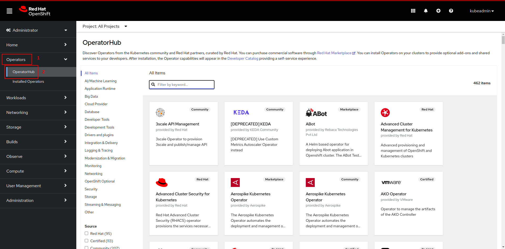
- Now search for
Multi Tenant Operatorand then click onMulti Tenant Operatortile
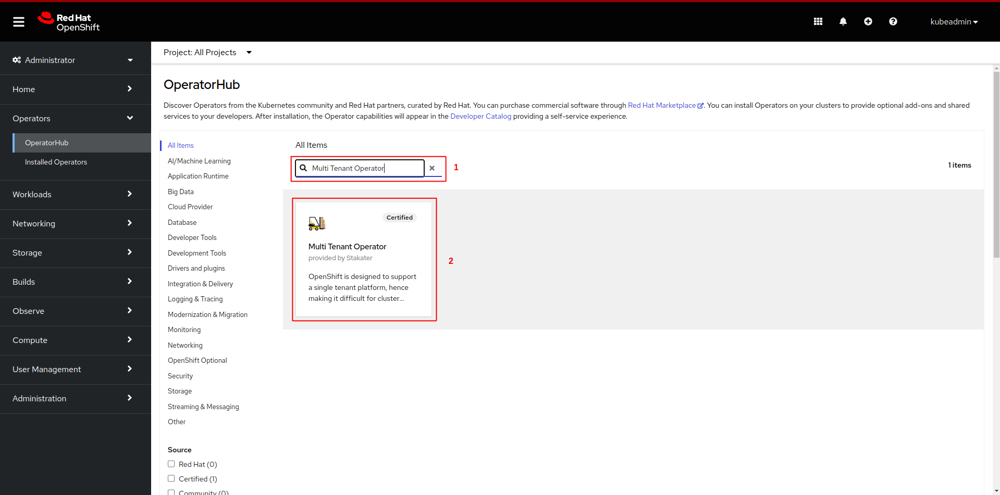
- Click on the
installbutton
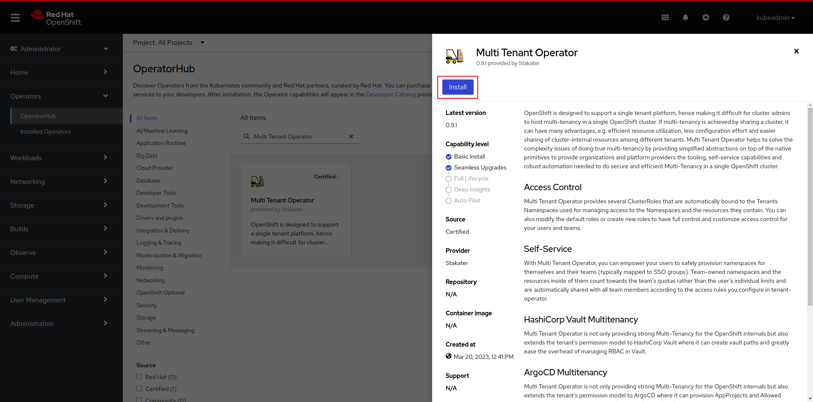
- Select
Updated channel. Selectmulti-tenant-operatorto install the operator inmulti-tenant-operatornamespace fromInstalled Namespacedropdown menu. After configuringUpdate approvalclick on theinstallbutton.
Note: Use
stablechannel for seamless upgrades. ForProduction EnvironmentpreferManualapproval and useAutomaticforDevelopment Environment
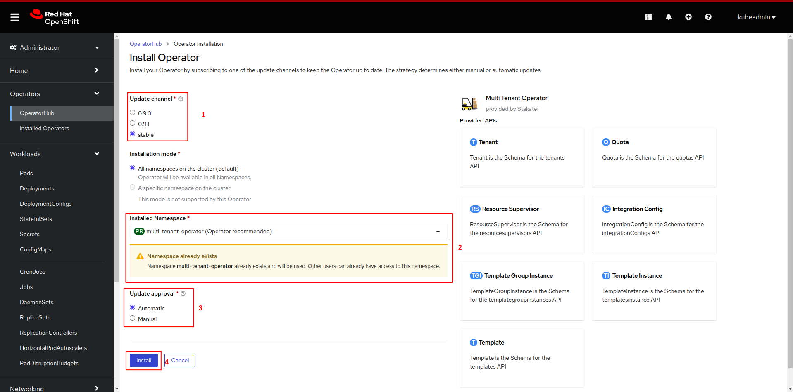
- Wait for the operator to be installed
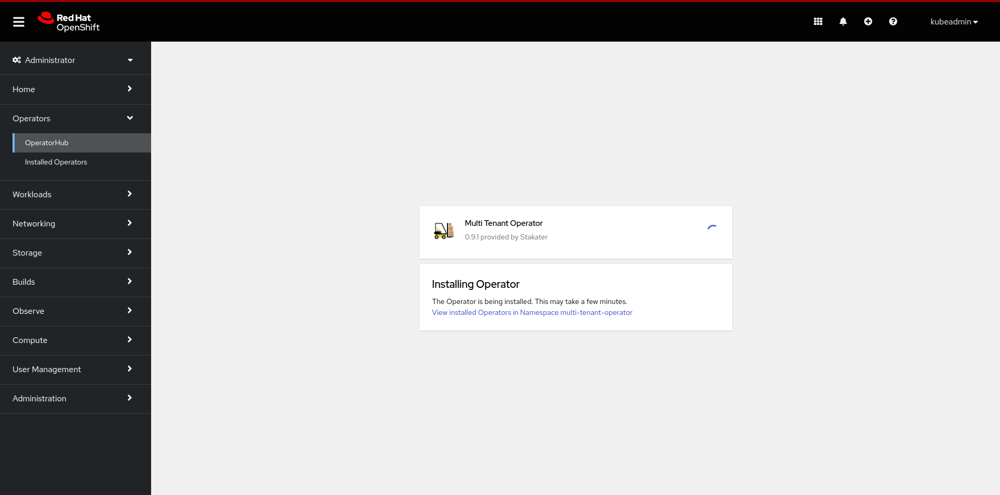
- Once successfully installed, MTO will be ready to enforce multi-tenancy in your cluster
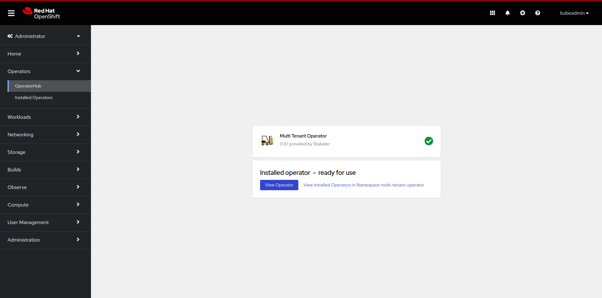
Note: MTO will be installed in
multi-tenant-operatornamespace.
Configuring IntegrationConfig
IntegrationConfig is required to configure the settings of multi-tenancy for MTO.
- We recommend using the following IntegrationConfig as a starting point
apiVersion: tenantoperator.stakater.com/v1alpha1
kind: IntegrationConfig
metadata:
name: tenant-operator-config
namespace: multi-tenant-operator
spec:
openshift:
privilegedNamespaces:
- default
- ^openshift-*
- ^kube-*
- ^redhat-*
privilegedServiceAccounts:
- ^system:serviceaccount:default-*
- ^system:serviceaccount:openshift-*
- ^system:serviceaccount:kube-*
- ^system:serviceaccount:redhat-*
For more details and configurations check out IntegrationConfig.
Installing via CLI OR GitOps
- Create namespace
multi-tenant-operator
oc create namespace multi-tenant-operator
namespace/multi-tenant-operator created
- Create an OperatorGroup YAML for MTO and apply it in
multi-tenant-operatornamespace.
oc create -f - << EOF
apiVersion: operators.coreos.com/v1
kind: OperatorGroup
metadata:
name: tenant-operator
namespace: multi-tenant-operator
EOF
operatorgroup.operators.coreos.com/tenant-operator created
- Create a subscription YAML for MTO and apply it in
multi-tenant-operatornamespace. To enable console set.spec.config.env[].ENABLE_CONSOLEtotrue. This will create a route resource, which can be used to access the Multi-Tenant-Operator console.
oc create -f - << EOF
apiVersion: operators.coreos.com/v1alpha1
kind: Subscription
metadata:
name: tenant-operator
namespace: multi-tenant-operator
spec:
channel: stable
installPlanApproval: Automatic
name: tenant-operator
source: certified-operators
sourceNamespace: openshift-marketplace
startingCSV: tenant-operator.v0.9.1
config:
env:
- name: ENABLE_CONSOLE
value: 'true'
EOF
subscription.operators.coreos.com/tenant-operator created
Note: To bring MTO via GitOps, add the above files in GitOps repository.
- After creating the
subscriptioncustom resource open OpenShift console and click onOperators, followed byInstalled Operatorsfrom the side menu
- Wait for the installation to complete
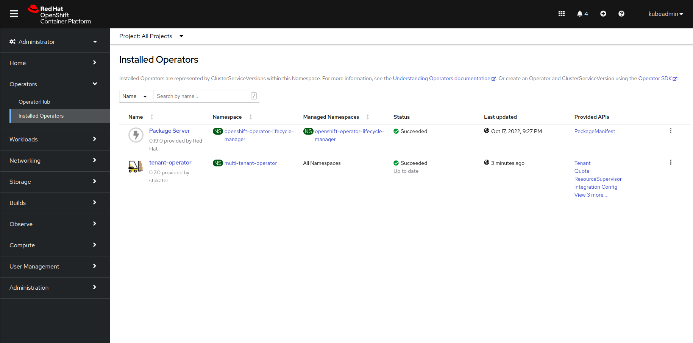
- Once the installation is complete click on
Workloads, followed byPodsfrom the side menu and selectmulti-tenant-operatorproject
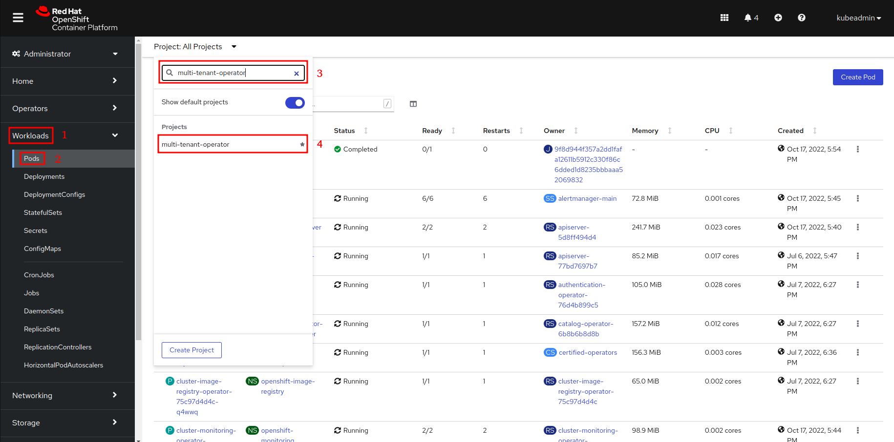
- Once pods are up and running, MTO will be ready to enforce multi-tenancy in your cluster
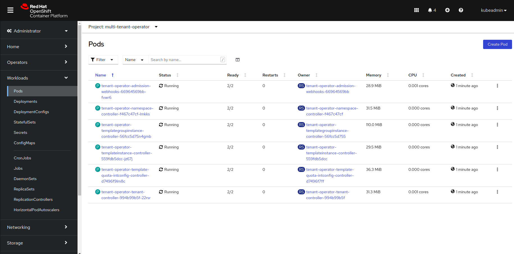
Configuring IntegrationConfig
IntegrationConfig is required to configure the settings of multi-tenancy for MTO.
- We recommend using the following IntegrationConfig as a starting point:
apiVersion: tenantoperator.stakater.com/v1alpha1
kind: IntegrationConfig
metadata:
name: tenant-operator-config
namespace: multi-tenant-operator
spec:
openshift:
privilegedNamespaces:
- default
- ^openshift-*
- ^kube-*
- ^redhat-*
privilegedServiceAccounts:
- ^system:serviceaccount:default-*
- ^system:serviceaccount:openshift-*
- ^system:serviceaccount:kube-*
- ^system:serviceaccount:redhat-*
For more details and configurations check out IntegrationConfig.
Uninstall via OperatorHub UI
You can uninstall MTO by following these steps:
-
Decide on whether you want to retain tenant namespaces and ArgoCD AppProjects or not. If yes, please set
spec.onDelete.cleanNamespacestofalsefor all those tenants whose namespaces you want to retain, andspec.onDelete.cleanAppProjecttofalsefor all those tenants whose AppProject you want to retain. For more details check out onDelete -
After making the required changes open OpenShift console and click on
Operators, followed byInstalled Operatorsfrom the side menu
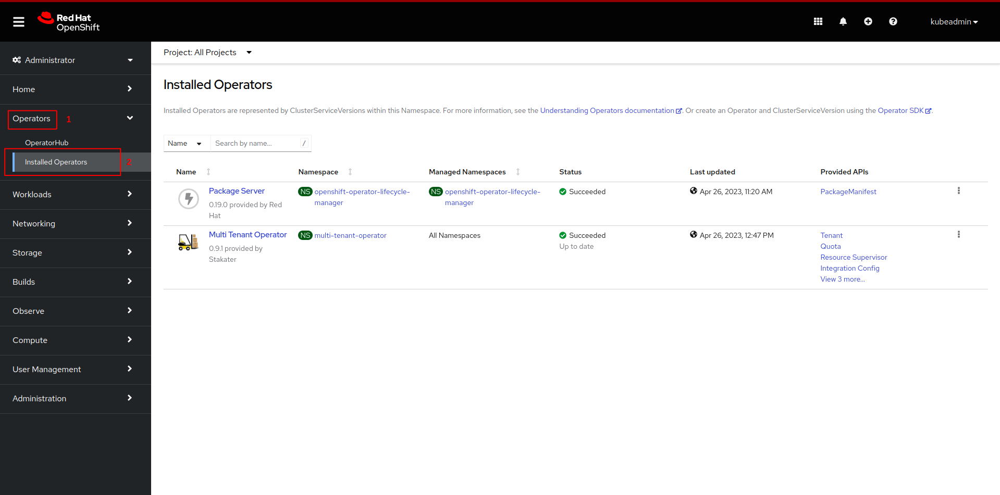
- Now click on uninstall and confirm uninstall.
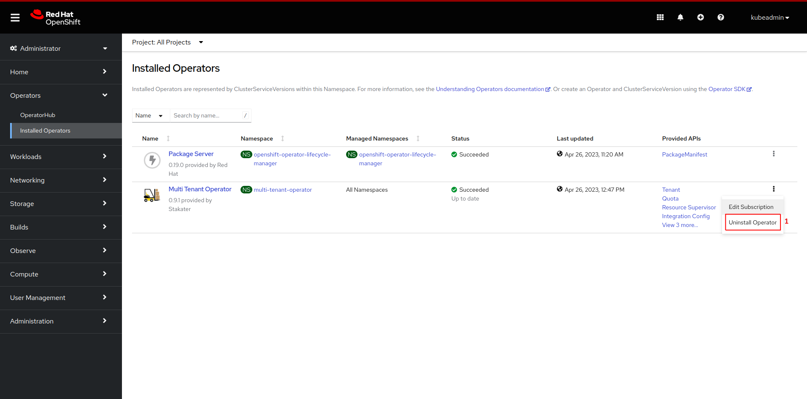
-
Now the operator has been uninstalled.
-
Optional:you can also manually remove MTO's CRDs and its resources from the cluster.
Notes
- For more details on how to use MTO please refer use-cases.
- For more details on how to extend your MTO manager ClusterRole please refer extend-admin-clusterrole.